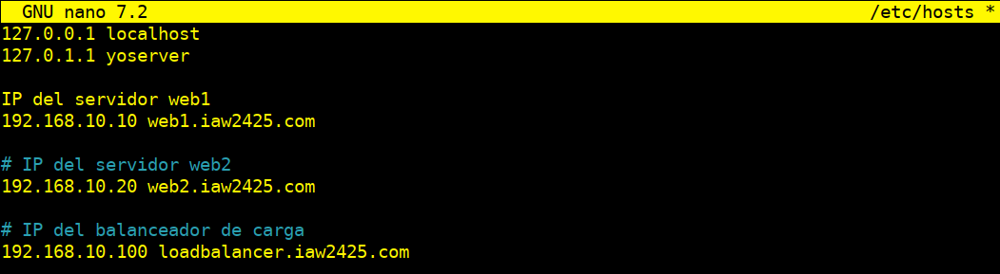
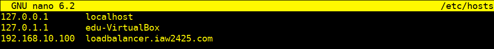

Práctica 2.5
Práctica 2.5 - Balanceo de Carga con Apache
Actualizar Paquetes del Sistema
Primero, actualizaremos y mejoraremos todos los paquetes del sistema a la última versión en todos los servidores:
apt update -y
apt upgrade -y
Reiniciaremos todos los servidores para aplicar los cambios.
Instalaremos el Servidor Web Apache en los tres servidores
sudo apt install apache2 -y
Verificamos el estado del servicio Apache:
systemctl status apache2

Configuramos el Primer Servidor Backend Apache
Configuramos el Firewall
Establecemos los puertos 22 y 80 para comunicarnos por terminal con el servidor y para poder acceder al servidor apache
sudo ufw enable
sudo ufw allow 22
sudo ufw allow 80

Eliminamos la página por defecto (DocumentRoot) index.html para evitar que no interfiera en cada servidor backend web1 y web2
cd /var/www/html
sudo rm -rf index.html
Creamos una página HTML de muestra y un archivo de configuración de host virtual en el primer servidor Apache
sudo nano /var/www/html/web1.html
Agregamos el siguiente código HTML:
<html>
<head><title>Backend 1</title></head>
<body>
<h1>Este es el servidor Backend 1</h1>
</body>
</html>

Guardamos y cerramos el archivo.
Deshabilitamos el sitio por defecto de Apache para evitar conflictos
cd /etc/apache2/sites-available
sudo a2dissite 000-default.conf
sudo systemctl reload apache2.service
Creamos el archivo de configuración del host virtual
nano /etc/apache2/sites-available/web1.conf
Agregamos las siguientes configuraciones:
<VirtualHost *:80>
ServerName web1.iaw2425.com
ServerAdmin webmaster@localhost
DocumentRoot /var/www/html
DirectoryIndex web1.html
ErrorLog ${APACHE_LOG_DIR}/error.log
CustomLog ${APACHE_LOG_DIR}/access.log combined
</VirtualHost>

Guardamos y cerramos el archivo, luego habilitamos y recargamos el servicio Apache: Habilitamos:
sudo a2ensite web1.conf
sudo systemctl reload apache2
Configuramos el Segundo Servidor Backend Apache
A partir de la configuración del Firewall realizaremos los dos mismos pasos previos hechos anteriormente hasta aquí, que es donde cambiaremos la configuración para el segundo servidor
Creamos una página HTML de muestra en el segundo servidor
sudo nano /var/www/html/web2.html
Agregamos el siguiente código HTML:
<html>
<head><title>Backend 2</title></head>
<body>
<h1>Este es el servidor Backend 2</h1>
</body>
</html>

Deshabilitamos el sitio por defecto de Apache para evitar conflictos
cd /etc/apache2/sites-available
sudo a2dissite 000-default.conf
sudo systemctl reload apache2.service
Guardamos y cerramos el archivo.
Creamos el archivo de configuración del host virtual
nano /etc/apache2/sites-available/web2.conf
Agregamos las siguientes configuraciones:
<VirtualHost *:80>
ServerName web2.iaw2425.com
ServerAdmin webmaster@localhost
DocumentRoot /var/www/html
DirectoryIndex web2.html
ErrorLog ${APACHE_LOG_DIR}/error.log
CustomLog ${APACHE_LOG_DIR}/access.log combined
</VirtualHost>

Guardamos y cerramos el archivo, luego habilitamos y recargamos el servicio Apache: Habilitamos:
sudo a2ensite web2.conf
sudo systemctl reload apache2
Podemos automatizar la configuración de backends con un script
Puedes ver el script aquí
Creamos el Balanceador de Carga de Apache
Una vez actualizado el sistema y configurado el Firewall seguiremos con los siguientes pasos
Habilitamos los módulos proxy en el servidor de balanceo de carga
sudo a2enmod proxy
sudo a2enmod proxy_http
sudo a2enmod proxy_balancer
sudo a2enmod lbmethod_byrequests
Reiniciamos el servicio Apache:
sudo systemctl restart apache2
Verifica todos los módulos proxy:
sudo apachectl -M | grep proxy
Creamos un archivo de configuración de Apache para el balanceo de carga
Deshabilitamos el sitio por defecto de Apache para evitar conflictos
cd /etc/apache2/sites-available
sudo a2dissite 000-default.conf
sudo systemctl reload apache2.service
Creamos un archivo de configuración de Apache para el balanceo de carga
sudo nano /etc/apache2/sites-available/loadbalancer.conf
Agregamos las siguientes configuraciones:
<VirtualHost *:80>
ServerName balancer.iaw2425.com
<Proxy balancer://webserver>
# servidor 1
BalancerMember http://web1.iaw2425.com
#BalancerMember http://IP_HTTP_SERVER_1:80
#servidor 2
BalancerMember http://web2.iaw2425.com
#BalancerMember http://IP_HTTP_SERVER_1:80
ProxySet stickysession=ROUTEID
</Proxy>
ProxyPreserveHost On
ProxyPass / balancer://webserver/
ProxyPassReverse / balancer://webserver/
</VirtualHost>

Guardamos y cerramos el archivo, luego habilitamos y recargamos el servicio Apache: Habilitamos:
sudo a2ensite loadbalancer.conf
sudo systemctl reload apache2
Configuraremos la Política de Balanceo de Carga
Para configurar la política de balanceo de carga es necesario tener activado previamente el módulo proxy_balancer con el siguiente comando:
sudo a2enmod proxy_balancer
El balanceo de carga que vamos a utilizar en esta práctica será un balanceo de tipo Round Robin. Este método de balanceo de carga consiste en distribuir las peticiones entre los servidores de forma secuencial, de forma que cada vez que llegue una nueva petición se envía al siguiente servidor de la lista de servidores configurados en el servidor Apache.
Para activar este método de balanceo tenemos que activar el módulo lbmethod_byrequests:
sudo a2enmod lbmethod_byrequests
Este método de balanceo también permite distribuir las peticiones entre los servidores en función de los parámetros lbfactor y lbstatus.
Recordemos que después de habilitar los módulos es necesario reiniciar el servicio de Apache:
sudo systemctl restart apache2.service
Configuración en /etc/hosts
En el balanceador, agregaremos las IP y los nombres de todos los servidores backend (web1, web2) en el archivo /etc/hosts:
`# IP del servidor web1`
`<IP_web1> web1.iaw2425.com`
`#IP del servidor web2`
`<IP_web2> web2.iaw2425.com`

Pondremos en el navegador la IP del servidor balanceador para verificar el Balanceo de carga con Apache
Teniendo en cuenta también que tendremos que configurar antes en el fichero /etc/hosts del equipo donde tenemos el navegador la IP del balanceador y nombre de dominio para asegurar que las solicitudes al dominio del balanceador se dirijan correctamente a la IP del balanceador, en lugar de pasar por el DNS público o por algún otro servicio de resolución de nombres.



Tenemos que tener en cuenta el configurar la IP y el nombre del dominio en el balanceador en el fichero /etc/hosts , pero sino trabajamos con nombres de dominio solo con IP nos valdrá
Podemos automatizar la configuración del balanceador con un script
Puedes ver el script aquí